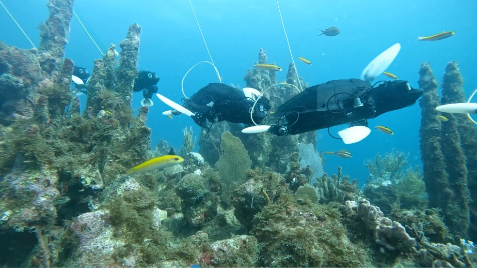
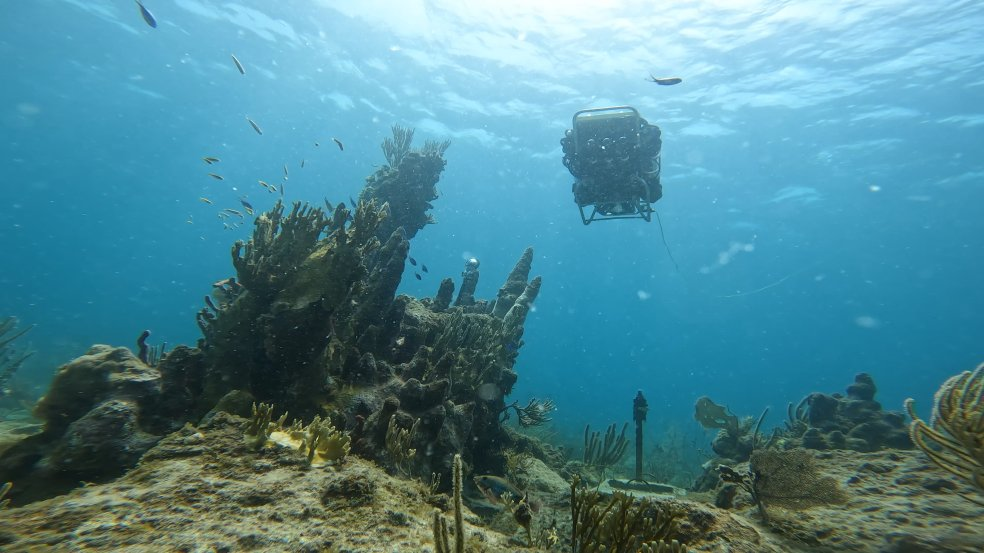
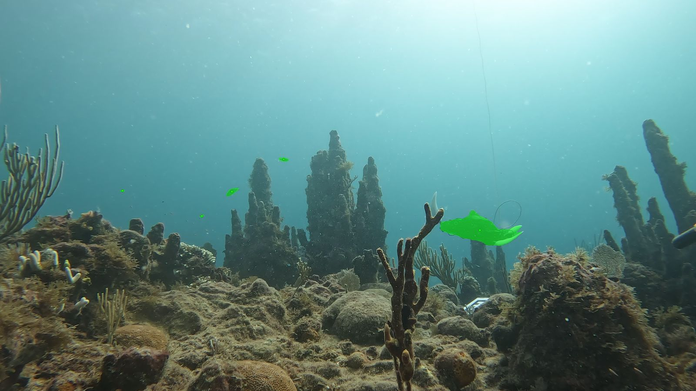
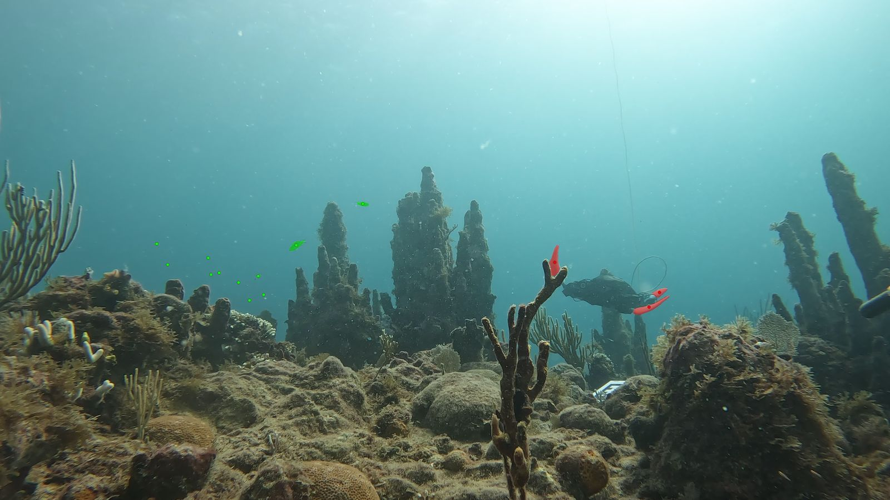
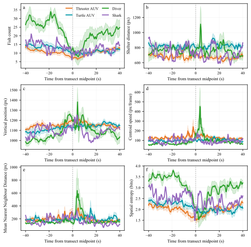
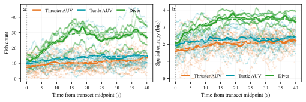
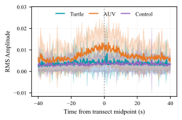

Abstract
Autonomous underwater vehicles (AUVs) are a promising alternative to divers for scalable collection of natural ocean ecology data. However, these robots may disturb local fauna and cause drastic behavioral differences compared to other monitoring techniques, decreasing their value as scientific tools. A promising prospect is to make AUVs that are more biomimetic, with the hope that taking on the form and behavior of a non-predatory animal may reduce adverse responses. We present the first dataset comparing fish disturbance in response to a conventional thruster-driven AUV, a sea turtle inspired flipper-driven AUV, and a diver. Experiments were conducted at a biodiversity hotspot in a Caribbean reef, and images of the scene were analyzed using computer vision to localize and study fish behavior change. Both AUVs cause measurable changes in fish behavior. Although no between-robot differences remain significant after correction for multiple comparisons, point estimates generally favor the biomimetic AUV, motivating larger studies capable of resolving modest effects and further design changes to optimize for disturbance. We also observe larger responses during diver transects than during AUV transects, although this exploratory comparison is based on a small diver sample with several confounds. While conclusions must be taken as preliminary due to operational and experimental limitations, this study provides the community with a first known dataset and benchmarks to quantify the behavioral impacts of biomimetic robots for ecological monitoring in the wild.
Two robots, one reef

Crush: biomimetic, flipper-driven

CUREE: conventional, thruster-driven
Contributions
- The first comparative field deployment of a conventional and a biomimetic AUV.
- Data on wild fish response to two different AUVs and to a human diver.
- An open-source pipeline to analyze such video data for fish disturbance.
- First evidence that AUVs may be less intrusive than divers, and that biomimetic AUVs may be less intrusive than conventional ones.
Method
Protocol
Fixed GoPro cameras on the seabed face a coral head that serves as a reef “hotspot.” AprilTags mark a three-point transect: one end of the reef, the hotspot, and the far end. After fish re-habituate to the cameras, the vehicle dwells at one end for a control period, swims across the hotspot, dwells at the other end, and repeats in reverse. The analysis uses the change from the dwell-period baseline as the vehicle passes the coral head, which helps control for differences in day, time, and species present.
Platforms
CUREE is a six-degree-of-freedom AUV driven by six Blue Robotics T200 thrusters, with survey cameras and a DVL for localization and altitude hold. Crush has the form of a sea turtle: it generates thrust with a pair of front flippers and steers with its rear flippers. The flippers are injection molded from silicone rubber and driven by DYNAMIXEL servomotors, with cameras in the eye sockets. Both robots were teleoperated to avoid collisions with the reef.
Field experiments
Deployments took place in November 2024 at the Yawzi reef site off St. John, US Virgin Islands. CUREE held an altitude of 1.5 m (about 7 m depth). A diver baseline was collected the previous day, and a shark happened to swim through the reef between experiments.
Finding fish with fine-tuned SAM 3
Out of the box, Segment Anything Model 3 missed distant fish in dim water and often labeled Crush and its flippers as fish. We fine-tuned it on 80 hand-labeled frames (1,801 annotations of fish and turtle flippers, 80/20 split, 40 epochs).

Pretrained SAM 3

Fine-tuned SAM 3
| Object size | AP | AR |
|---|---|---|
| Large (≥ 9216 px²) | 0.966 | 0.971 |
| Medium | 0.717 | 0.757 |
| Small (< 1024 px²) | 0.372 | 0.408 |
Disturbance metrics
- Fish count
- Number of detected fish in the frame. The most informative signal.
- Shelter distance
- Mean distance from the primary coral head, used in prior work.
- Vertical position
- Mean vertical pixel position of the fish, since fish often fled upward and away from the reef.
- Centroid speed
- Frame-to-frame displacement of the school centroid (px/frame).
- Mean nearest-neighbour distance
- Local clustering of shoaling fish.
- Spatial entropy
- Global dispersal of the fish over an 8×8 grid, H = −Σ pi ln pi.
Each transect is normalized to unit progress and split into start [0, 0.25), middle [0.375, 0.625], and end (0.75, 1] windows. The per-transect response is the middle-window median relative to the two baselines:
Δ = xmiddle − ½ (xstart + xend)
One-sample t-tests check whether Δ differs from zero for each vehicle. The primary comparison, thruster AUV versus turtle robot, uses Welch t-tests with Benjamini–Hochberg FDR correction across the six metrics. Diver comparisons (n = 4) are exploratory.
Results

Every condition produces a characteristic dip in fish count at the center of the transect, followed by recovery, so all of them disturb the fish. The thruster AUV causes a slightly larger drop (−3.12) than the turtle robot (−2.56), though the difference is not significant (p = 0.49). From a higher baseline, the diver causes a larger drop (−9.76). Beyond fish count, the most consistent signal is spatial entropy, which falls for every condition: fish crowd together as the disturbance passes. Shelter distance, used in earlier work, shows no clear trend.
| Condition | Metric | Δ | 95% CI | p |
|---|---|---|---|---|
| Thruster AUV | Fish count | −3.12 | [−4.38, −1.87] | <0.001 |
| Spatial entropy | −0.46 | [−0.65, −0.27] | <0.001 | |
| Centroid speed | 21.50 | [6.51, 36.48] | 0.008 | |
| Vertical position | 37.58 | [2.64, 72.51] | 0.037 | |
| Mean NND | 47.80 | [−2.21, 97.82] | 0.060 | |
| Shelter distance | −3.46 | [−46.83, 39.91] | 0.868 | |
| Turtle robot | Fish count | −2.56 | [−3.69, −1.43] | <0.001 |
| Spatial entropy | −0.19 | [−0.37, −0.02] | 0.032 | |
| Mean NND | 15.07 | [−6.93, 37.06] | 0.166 | |
| Centroid speed | 7.51 | [−4.47, 19.50] | 0.202 | |
| Shelter distance | −18.72 | [−50.73, 13.28] | 0.233 | |
| Vertical position | 0.67 | [−33.08, 34.41] | 0.967 | |
| Diver | Fish count | −9.76 | [−12.61, −6.91] | 0.002 |
| Spatial entropy | −0.85 | [−1.11, −0.58] | 0.002 | |
| Vertical position | 157.30 | [71.73, 242.86] | 0.010 | |
| Centroid speed | 33.06 | [−29.29, 95.42] | 0.190 | |
| Mean NND | 35.80 | [−79.38, 150.97] | 0.396 | |
| Shelter distance | 42.06 | [−191.86, 275.97] | 0.607 |
Thruster AUV versus turtle robot
No metric differs significantly between the two robots after FDR correction. The largest uncorrected effect is spatial entropy (difference −0.27, p = 0.037, pFDR = 0.22), suggesting the thruster AUV may cause fish to bunch up more than the turtle robot does. With 17–18 transects per robot, the study is likely underpowered for moderate between-robot effects.
| Metric | AUV Δ | Turtle Δ | Difference | 95% CI | p | pFDR |
|---|---|---|---|---|---|---|
| Spatial entropy | −0.46 | −0.19 | −0.27 | [−0.52, −0.02] | 0.037 | 0.223 |
| Vertical position | 37.58 | 0.67 | 36.91 | [−9.82, 83.64] | 0.118 | 0.267 |
| Centroid speed | 21.50 | 7.51 | 13.98 | [−4.51, 32.48] | 0.133 | 0.267 |
| Mean NND | 47.80 | 15.07 | 32.74 | [−20.76, 86.24] | 0.218 | 0.328 |
| Fish count | −3.12 | −2.56 | −0.56 | [−2.19, 1.07] | 0.487 | 0.554 |
| Shelter distance | −3.46 | −18.72 | 15.27 | [−36.77, 67.30] | 0.554 | 0.554 |
Flight initiation distance
Without absolute distances, time to closest approach serves as a proxy. A logistic profile fitted to the pooled per-frame data gives the time at which the response first reaches 95% of baseline.

| Metric | Thruster AUV | Turtle | Diver |
|---|---|---|---|
| Fish count | 22.02 | 14.80 | 11.43 |
| Spatial entropy | 13.37 | 6.73 | 11.94 |
Sound
The GoPro microphones give a rough comparison of how loud each robot is on the reef. The thruster AUV was about 2–3× louder than the turtle robot, which was close to the no-robot control. The microphones were not calibrated, so these are relative values only, and we did not establish a causal link between sound and disturbance.

| Window | Thruster AUV | Turtle | No robot |
|---|---|---|---|
| Whole trial | 0.0072 ± 0.0021 | 0.0035 ± 0.0011 | 0.0032 ± 0.0019 |
| Midpoint ± 5 s | 0.0110 ± 0.0040 | 0.0042 ± 0.0031 | 0.0037 ± 0.0028 |
- All turtle-robot transects were run before all CUREE transects, so time of day is confounded with vehicle.
- Crush was hard to control in strong currents, so its transects were messier than CUREE's.
- The diver transects (n = 4) were collected on a different day with roughly twice the baseline fish count.
- Robot data come from a single day at a single site.
- Small fish are under-detected, and the microphones were uncalibrated.
BibTeX
@misc{pham2026characterizing,
title = {Characterizing Wildlife Response to Biomimetic and Conventional Underwater Vehicles},
author = {Pham, Huy and Cai, Levi and Girdhar, Yogesh and Rus, Daniela and Patterson, Zach J.},
year = {2026},
eprint = {2609.22594},
archivePrefix = {arXiv},
url = {https://arxiv.org/abs/2609.22594}
}